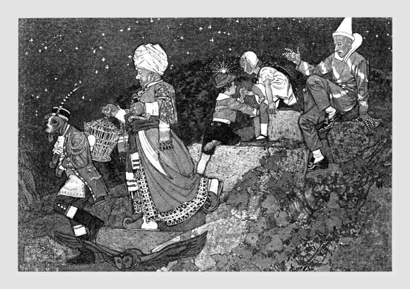

| Nội dung thủ bút: Sáng sớm hôm sau, một người chị hai từ trong ngõ, gánh đôi thùng nước đi ra, khi tới ngang tầm cây dạ lan thì chị ta quăng đôi thùng rú lên thất thanh. Lủng lẳng trên một cành thấp, ông lão già đã thắt cổ tự tử. Mai Thảo |
Mai Thảo (Nguyễn Đăng Quý): Làm báo, viết văn. Sinh ngày: 8-6-1927 tại Nam Định (Bắc Việt)
Tác phẩm: Đêm giã từ Hà Nội 1956, Tháng giêng cỏ non 1957, Mái tóc dĩ vãng 1963, Bản chúc thư trên ngọn đỉnh trời 1964,Khi mùa mưa tới 1964, Căn nhà vùng nước mặn 1966, Sau khi bão tới 1967, Đêm lạc đường 1967, Bầy thỏ ngày sinh nhật 1968, Tới một tuổi nào 1968, Dòng sông rực rỡ 1968, Cũng đủ lãng quên đời 1968, Người thầy cũ 1968, Mười đêm ngà ngọc 1968, Chuyến tàu trên sông Hồng 1969
Mai Thảo
Và giông gió cuộc đời
Kể từ ngày dòng sông Bến Hải mang cái nhục chia đôi toàn quốc, dòng nước nhỏ nhoi kia được cả thế giới biết đến và được coi như biên thuỳ mới cho hai chế độ trong một quốc gia. Dòng sông tự nó có hay biết gì đâu, vẫn chảy êm đềm, bình dị qua những bến bờ quen thuộc trước khi đổ xuôi rồi hoà mình vào đại dương. Và nhịp cầu bắc ngang để nối liền Quốc lộ 1 cũng được sơn hai màu xanh, đỏ để phân định hai nếp sống của một dân tộc.
Từng chuyến phi cơ cất cánh từ trường bay Gia Lâm bên kia dòng Hồng Hà, trong những sớm sương mù trùm phủ xóm làng, đồng ruộng, làm mờ vóc dáng thương yêu của bờ tre, khóm chuối, của những khuôn cửa hè phố Hà Nội cổ kính. Rồi từng chuyến tàu rời bến Hải Phòng bỏ lại những nhà máy, ống khói, bỏ lại cửa biển với vịnh Hạ Long, những con người ra đi về phương Nam.
Từ ngày đó đến nay đã trên 15 năm. Thời gian đi những bước nhè nhẹ trong nhịp luân hành của vũ trụ nhưng vô cùng nhanh rộng đối với chu kỳ của một kiếp người hay những con người chưa nguôi ngoai tình quê hương.
Giữa cái nhịp sống hoang mang và bỡ ngỡ trên mảnh đất mới, Mai Thảo đột nhiên xuất hiện trên vòm trời văn nghệ như một vì sao lạ với Doãn Quốc Sỹ, Nguyễn Sỹ Tế, Trần Thanh Hiệp và một nhóm sinh viên di cư hiện diện trong khuôn khổ tờ Người Việt.
Nói đến Mai Thảo, tức là nói về sự bứt thoát giữa hiện tại và quá khứ, là nói đến một khoảng không gian tinh khôi, ở đây, những suy tư mới được phác lên với bao niềm tin yêu nồng cháy. Mai Thảo, nhà văn có lập trường rõ rệt. Những điều cần phải viết ra, đều được viết một cách dứt khoát, nhất là về vấn đề chống cộng trong lãnh vực văn nghệ. Bị cuộc sống đẩy vào con lộ “một chiều” giữa khung cảnh Hà Nội năm 1954, Mai Thảo đành phải lên đường, chẳng những bỏ lại thành phố Hưng Yên với căn nhà vùng nước mặn, bỏ lại quê hương mà còn đau nhất là cuộc biệt ly giữa tuổi tình yêu đọng tên hai mái tóc ngắn, dài. Cái tâm trạng u sầu đó, Mai Thảo biến thành căm thù rồi đem căm thù căng giữa lòng giấy trắng, dùng chiều sâu của suy tư để đưa nó vào một khung cảnh, một trạng huống vừa khích động vừa lôi cuốn người đọc vào ý muốn của mình.
Mai Thảo khởi hành từ Đêm giã từ Hà Nội là tác phẩm đầu tay làm quen với độc giả bằng những truyện ngắn – ở đấy – Mai Thảo ký thác rất nhiều tâm sự, thứ tâm sự chua chát của kẻ vừa đánh mất gia tài. Do đó, ngoài sự cảm thông phần nội dung của toàn tập truyện, người đọc nhận ra sự hứa hẹn về bút pháp trong tương lai của một nhà văn di cư gần ba mươi tuổi. Thực ra, Đêm giã từ Hà Nội không phải sự hiện diện thứ nhất để ghi nhận một tài năng, mà Mai Thảo đã viết từ ngày còn đi kháng chiến. Đêm giã từ Hà Nội chỉ là kết quả đầu tiên của những năm luyện tập âm thầm trong bóng tối. Cánh cửa vào đời văn chương mở ra để đón nhận Mai Thảo với nhiều bao dung ở giữa một xã hội tạm ổn định về chính trị cũng như quân sự.
Tác phẩm thứ hai của Mai Thảo, Tháng giêng cỏ non ra đời vào năm 1956, Sáng Tạo xuất bản. Tác phẩm này gồm 10 truyện ngắn đã đăng tải ở tạp chí Sáng Tạo do Mai Thảo làm chủ nhiệm. Tháng Giêng cỏ non là nhan đề truyện đầu của tập truyện. Bút pháp của Mai Thảo ở tập truyện này đã sắc, nhưng nội dung vẫn chỉ chuyên chở nội tâm với ít nhiều quá khứ trộn lẫn hiện tại.
Nói cho đúng, giai đoạn này, Mai Thảo chỉ là nhà văn tình cảm. Chính vì tình cảm chan chứa ở trong lòng nên cái được viết ra, được nói lên hoàn toàn nằm trong lãnh vực “chủ thể” với tất cả cái “tính bản thiện” hiện rõ ràng trong cách “thu xếp”, “dàn trải” cốt truyện và nhân vật. Không có sự quá độ trong văn chương cũng như ý nghĩ ở Mai Thảo. Nó chung chung. Nó không đau cái đau xé ruột mà cũng không vui cái vui hồn nhiên. Nó thoang thoảng như mùi hương thiên lý về khuya. Nó lãng đãng như phiến mây trong vòm trời bát ngát. Nó là cái cay đắng vừa phải, cái chua chát chịu được. Nó là bản chất đôn hậu trong một người có ý-thức.
Tháng Giêng cỏ non nói về một người nông dân tên Sạng bỏ vợ con vào Nam vì bị nghi làm chỉ điểm cho “Tây đoan” bắt rượu lậu trong nhà người anh em chú bác. Anh Sạng đối với tác giả có nhiều kỷ niệm. Lúc vào Nam, tác giả gặp lại Sạng thì biết anh đã có thêm một người vợ người Nam. Nay vợ con Sạng ở Bắc cũng di cư vào, sự tình trở nên rắc rối. Nhưng rồi Sạng thu xếp cho Nam Bắc một nhà, vui vẻ cả. Đây, cái lối dựng truyện của Mai Thảo cách đây hơn 10 năm nó như thế với những đoạn văn thật đẹp:
Thời gian nghiêng đi. Từ ngày gặp anh Sạng, đến nay đã được sáu tháng. Trong thành phố rộng lớn, cuộc sống tiến tới là sự kết thành của những lớp đổi thay mãnh liệt. Mỗi ngày một hình thức mới. Mỗi ngày một màu sắc mới, một tâm tình mới.
… Vậy mà mùa Xuân đã về rồi. Mùa Xuân của những ngả đường cỏ non, của những ngày khởi đầu nhung lụa, của những đợt khói hương thơm ngát trong đêm Giao Thừa, của buổi gặp lại, của ngày trở về. Mùa Xuân tự do thứ nhất ở đây vẫn chứa đựng cái hình ảnh muôn đời đôn hậu của Đoàn Viên…
(Tháng Giêng cỏ non, trang 20)
Nhưng dù cho cuộc sống mới với những đổi thay mãnh liệt đến thế nào đi nữa thì hình ảnh cũ, hình ảnh của dĩ vãng thơ mộng, hình ảnh căn gác nhỏ phố Huế với vóc dáng Lựu, người con gái bé bỏng đang chết sững trong ý nghĩ của Triệu với nhớ thương, hờn dỗi:
Gác phố Huế, không ngày…
Đau buồn đã xảy đến trong loạn ly, trong chia cách. Những lớp người thiên cổ, những ngả đường mòn. Những hình chiến luỹ. Tôi xa Lựu luôn mấy năm. Tôi nhớ Lựu nhiều nhất vào những ngày tháng đau khổ mất mát ấy. Tất cả những ngả đường nào ở đó tôi hy vọng gặp lại Lựu đều nhoà đi cái triều nối kết.
… Giữa hai cuộc đời biên giới dựng lên từ đó. Hai bờ chia cắt đứt đoạn. Bên này bên kia, hai miền đất nước nhớ thương nhau.
… Những ánh lửa viễn phố ma quái đốt cháy nội tâm tôi.
("Người bạn đường", Tháng giêng cỏ non, trang 44)
Đi từ căn gác phố Huế bước sang “Giai đoạn chị Định”, Mai Thảo đã ném suy nghĩ của mình từ một ý tư riêng tới sự vượt thoát để bày tỏ lập trường trước cuộc sống, ở đó, ý thức tự do của chị Định, nhân vật chính của truyện, đã được Mai Thảo biến thành một hy sinh cao cả.
Hồi đó chúng tôi đến Án Đổ mỗi ngày mỗi nhiều. Những đợt chỉnh huấn cải tạo của cộng sản càng rộng thì số người bỏ đi càng thêm đông đảo. Góc núi Án Đổ biến thành một thứ cứ điểm của tự do.
Đêm hôm đó tôi ngồi nói chuyện với chị Định ở bờ suối đến khuya. Đêm rừng đẹp một vẻ huyền ảo quanh tôi. Sao sáng muôn vàn trên khắp Án Đổ. Trời lạnh đặc. Sương phủ xuống trắng xóa những thành đá. Chị Định thúng thắng ho. Tôi nghĩ đến những ngày cuối cùng của chị. Đến những ống Streptomicine. Đến căn bệnh hiểm nghèo sẽ cướp mất cả chúng tôi người chị thân yêu…
Chị Định chết thật. Chị đã hy sinh cho bao nhiêu người trai trẻ bỏ vùng kháng chiến trở về thành vì không chịu đựng lâu hơn nữa sự bao vây của cách mạng với những đợt chỉnh huấn, cải tạo. Chị Định chết giữa mùa xuân. Chị không bao giờ về căn nhà cũ ở cửa Nam. Chị Định đã nằm xuống một mình trong khu vực cộng sản. Chị chết tự do. Và cũng kể từ đó “đường dây” vào thành qua vùng Án Đổ còn có ai thay chị Định?
Toàn tập truyện Tháng Giêng cỏ non ít nhiều gì cũng có dĩ vãng quẩn quanh mà Mai Thảo sử dụng dĩ vãng như bối cảnh để được tự do phóng hồn mình, phóng tâm sự mình bằng ngôn ngữ vừa chân thành vừa uất hận.
Mai Thảo viết gọn và sắc, tuy một đôi khi cố tạo nên diêm dúa để trang hoàng cho cảm nghĩ. Đó là điểm đặc biệt làm người đọc đỡ nản. Mai Thảo viết rất nhiều truyện ngắn. Ở mỗi truyện, Mai Thảo đều đưa ra một trạng huống, một hoàn cảnh để dẫn vào y trước. Ngay cả vấn đề tình yêu. Tình yêu ở trong tác phẩm của Mai Thảo không bao giờ được viết một cách thoải mái, sự thoải mái cần thiết của ngôn ngữ để chuyên chở ý tưởng dù là ý tưởng đau buồn. Mai Thảo lạnh lùng phác hoạ trong vòm cong trí tuệ từng dữ kiện hiển nhiên và mặc nhiên thừa nhận sự tình xảy ra – mà thế nào cũng xảy ra – sự níu kéo rất vô ích của nguyên vẹn, tròn đầy.
Trong Bầy thỏ ngày sinh nhật, tập truyện do Nguyễn Đình Vượng xuất bản năm 1965, chứng minh những điều trên xuyên qua cốt truyện và các nhân vật như Liễu – cô lái đò bất đắc dĩ – đã nhắm nghiền mắt, bằng một tiếng kêu ngân đi trong im lặng hoang đường xanh biếc xung quanh, nàng cho gã đàn ông phiêu bồng trong ly loạn phá vỡ cái bờ cuối cùng của đời con gái, để rồi chết tức tưởi theo con đò, trong lòng sông lạnh dưới lằn đạn của phi cơ khu trục Pháp.
Có phải chăng “tình chỉ đẹp khi còn dang dở” nên Phẩm đã ôm súng săn chờ hổ ba đêm để bảo vệ hạnh phúc lứa đôi với bầy thỏ mừng đứa con đầu lòng nhân ngày sinh nhật, rốt cuộc bị hổ vồ và cả người lẫn vật đều chết. Hạnh phúc bơ vơ theo dòng nước mắt biết đến bao giờ khô?
Còn “Cái lưới an toàn” chỉ là một ích kỷ, một đè nén, một đổ vỡ ngay từ khởi đầu của tình yêu mới nhen lửa. Và những Thân, Tuần Hương, Chuẩn cùng những tiếng động đi qua ngôn ngữ trong “Chân dung thành phố” đến “Bước chân ngoài hành lang”, tất cả, tất cả đều toát ra và đẩy đến nỗi nhức nhối, buồn buồn như bệnh phong thấp của người già những hôm thay đổi tiết trời cuối năm.
Qua những truyện ngắn của Mai Thảo, người đọc hình dung thấy vùng đất đai mà Mai Thảo đã phác định và đang tiến tới đúng là “vùng đầu gió”. Ở đó, Mai Thảo đã dùng tài năng và trí tuệ để bám chặt vào mỗi phân vuông suy cảm trước khi hình thành tác phẩm. Người đọc có cảm tưởng một phần sự thực của cuộc sống đã xâm nhập vào bản thân tác giả để trở nên những ám ảnh triền miên suốt ngày, suốt tháng.
Trong Dòng sông rực rỡ cũng vậy, Mai Thảo vẫn đi tìm tình yêu, thứ tình yêu trong chia lìa chỉ vì chưa gặp được tình yêu lý tưởng như trường hợp Tuyền của “Bước đi một bước”, như trường hợp Vũ Xuân chết trần truồng bên dòng sông với lời sỉ nhục, dòng sông ở đây được Mai Thảo coi như Định Mệnh:
Phía Đông Bắc của thành phố này, mày biết không, có một vùng trời đất đêm ngày nguy nga, ở đó, ngày cũng như đêm, đất bốc hào quang, nước dồn ánh sáng, những cuộc đời hèn mọn nào cũng là sự kỳ diệu hân hoan của sao trời sa số hằng hà muôn phương họp mặt. Ở đó, mày biết không, ngày cũng như đêm, mỗi thước vuông không khí là một phiến ngực trần chói lọi thở, gió và nắng chan hoà lẫn nhau, ở đó là niềm kiêu hùng tạm vỡ cuối cùng của tạo vật, và tất cả, như thế, chỉ bởi có một dòng sông rực rỡ chảy qua. Ngày xưa hoang đường và hằng cửu của bình yên có lẽ ẩn náu ở đây, dưới thăm thẳm đáy cùng của dòng sông rực rỡ. Có lẽ. Mày, tao đi đây. Đã hết ngạc nhiên, thôi chẳng đợi chờ, cười ngất vào cuộc đời ném lại, cất bổng mình bay, tao đi đây!.
(Dòng sông rực rỡ, trang 37-38)
Đoạn văn vào truyện trên, Mai Thảo đã đưa người đọc nhập một thế giới lung linh, huyền ảo và dòng sông được dùng vừa để biểu tượng cho mệnh số vừa gây cảm giác cho cái Đẹp cuối cùng của mỗi kiếp nhân sinh.
Nói cho đúng, những truyện ngắn hay nhất của Mai Thảo đều nằm gọn trong tập Bản chúc thư trên ngọn đỉnh trời. Bút pháp trong tập truyện thật sống, thật sâu, thật sắc, thật gọn, thật chải chuốt. Nội dung từng câu chuyện thường thôi nhưng Mai Thảo đã dùng nghệ thuật để tạo nên từng bức tranh linh động và quý. Mai Thảo gọt từng chữ, nắn từng dòng làm cho hơi văn tuy nhẹ mà thấm, tuy dàn trải mà vẫn cô đọng. Nội dung truyện “Bản chúc thư trên ngọn đỉnh trời” không cho người đọc xác định đúng vị trí địa dư của một khu vực nào trên mặt đất. Nó chỉ là hình tượng, một cái cớ để Mai Thảo dựng những mốc xung quanh. Ngay cả nhân vật, người đọc cũng không tìm ra nguồn gốc. Nhưng cái đó không quan hệ, vì mục đích của truyện không nhằm vào nhân vật và vị trí địa dư mà chính để biểu hiệu một niềm tin, một ý chí vươn tới đỉnh-cao-đời-sống, một chán nản, một thất vọng, một tình yêu muôn thuở, chỉ có thể tìm thấy trong tưởng nhớ, trong cái Đẹp chưa bị hoen ố bởi dục vọng thấp hèn vì nàng chỉ là đứa em bé nhỏ, yếu đuối và chàng là dòng dõi một gia đình có nhiều lượng máu phiêu lưu chảy trong huyết quản.
Chàng có đôi mắt sâu như chứa đựng những hoang vu tiền sử, những đỉnh trời cao ngất không ngó thấy, những không gian buốt lạnh không có dấu chân và sự sống loài người.
Ánh lửa dị thường mỗi khi cháy lên trong đôi mắt chàng, là một lần làm tôi hoảng hốt. Chàng ôm tôi trong tay chàng mà linh hồn chàng đã ở tận đâu đâu, con mắt chàng đã nhìn một cái gì tôi không nhìn thấy.
Tôi yêu chàng như chàng vẫn vậy. Tôi chỉ biết khóc – Tôi chỉ biết nguyện cầu Đức Mẹ…
(Bản chúc thư trên ngọn đỉnh trời, trang 17-18-19)
Người đàn ông được gọi là chàng đã ra đi vĩnh viễn sau khi ghi nhận trên ngọn đỉnh trời, trên tầng cao nhất, bằng sự khinh thường vì nó cũng nhàm chán, không huyền bí và kiêu hãnh như khi còn ở chu kỳ mơ ước! Cuộc đời và thần tượng nghệ thuật cũng vậy. Chỉ nên đứng xa mà ngó, đủ rồi!
Tiếp nối là vóc dáng Luân đẩy lưỡi cày trên nền đất rừng cằn cỗi trong khoảng thời gian tản cư giữa vùng hậu phương trào khí thế tăng gia sản xuất để trường kỳ chống Pháp. Luân, một cô gái quê thuộc gia đình phú hào vì hoàn cảnh đã phải chịu đựng không biết đến bao giờ sự nhục nhằn của thân phận người con gái với tình yêu phất phơ trong cuộc sống nặng nề trên nền đất rừng cằn cỗi!
Cũng như thằng “Dắc”, một thằng lính Tây khốn nạn lấy vợ Việt rồi chịu bao nhiêu giày vò, hình phạt do đám người không cùng nòi giống:
Đúng thằng Dắc. Tại thằng Dắc hết. Thức ăn không có là tại thằng Dắc. Cái quán hàng này một dạo vắng ngắt là tại cái thằng trời đánh thánh vật. Tiếng mụ Năm the thé la lớn:
“Dắc! Dắc! Dắc!”
....................................
Và Dắc tỉnh dậy. Dắc bàng hoàng tỉnh dậy như từ vừa một chiếc đài hoa lớn mà tỉnh dậy, tiếng thét lanh lảnh của mụ Năm là chiếc gai buốt nhọn đâm thấu suốt đài hoa. Dắc nằm ngửa, thân thể đỏ hỏn, lông lá tênh hênh, trên chiếc giường vải gấp, thần trí chập chờn của Dắc còn vang vọng tiếng mưa lũ dạt dào dội lại từ một phương trời nào, phương trời đó ở cách đây hàng vạn cây số, mịt mùng, hoa cỏ đứng yên phăng phắc, như trên một nấm mồ, một nghĩa địa và cơn mộng dữ đã đưa linh hồn Dắc trở về đầy cái khối linh hồn đớn đau đó thức tỉnh đột ngột bởi những tiếng thét của con quỷ cái từ buồng ngoài dội vào. Thoáng hiện trong giây phút ngắn ngủi, mong manh và đã tan vỡ, đã rời gãy, những hình ảnh cũ. Đỉnh núi chất ngất. Hoa tuyết lả tả. Những cánh rừng thông bát ngát đông đặc lại trong một buổi sáng mùa đông.
(“Tiếng cười trên ấy”, Bản chúc thư trên ngọn đỉnh trời, trang 58).
Dắc là tên lính đánh thuê trong đoàn quân viễn chinh Pháp năm nào. Nó đã bắn giết hung bạo dể rồi chết dưới nanh vuốt của thú rừng như một con vật khốn nạn biết ăn năn.
Tập Bản chúc thư trên ngọn đỉnh trời gồm 10 truyện, ở đó, Mai Thảo đã dùng tài hoa của mình để phô diễn tất cả những nét tinh vi của nghệ thuật. Mỗi truyện là một tấm thảm quý với công trình điêu luyện do nghệ sĩ hình thành. Nhất là truyện “Người đàn bà trong vòng đai trắng”, với không khí của vùng đất “tề” tang tóc, khủng khiếp, với bao nhiêu lo âu, tính toán của những người “vượt đai” vào Thành, với tâm trạng của kẻ ở, người về, những ai đã trải qua cái trạng huống đó mới hiểu rõ và mới cảm thấy những gì Mai Thảo viết ra nó hoàn toàn không nằm trong lãnh vực tiểu thuyết mà nó gần với sự thực nhất, người nghệ sĩ ở đây, chỉ ghi nhận và dùng nghệ thuật để diễn tả mà thôi:
Vùng tiếp giáp giới tuyến vừa mở ra, không khí và cảnh vật đã bất thình lình đổi khác. Chúng tôi đi vào một vùng không còn một dấu tích nào của sự sống. Trên từng cây số liền, chỉ dàn ra một thứ yên lặng ghê gớm, một thứ yên lặng rợn người. Chúng tôi đi trên một vùng đất chết, một thứ nghĩa địa, một thứ sa mạc. Những ngọn cỏ đường, những hòn đá, những mô đất cũng như nín thở, chết sững trong yên lặng. Những cành cây như treo lủng lẳng trên đầu những tai biến bất ngờ. Chỗ ngoặt chỗ rẽ nào cũng như chờ rình bước chân di tới. Xó góc nào cũng như trô trố những con mắt, những nòng súng đen thẫm, những mũi kim khí nhọn hoắt. Thước đất nào cũng như chôn giấu những cạm bẫy, chỉ định sập xuống, những quả mình chỉ muốn nổ tung lên. Không khí đọng lại, gờn gợn một vẻ hằn học. Vòm trời vùng giới tuyến, những đám mây chuyển đi cũng như muốn lảng xa người…
… Không một tiếng động, không một tiếng vang, không một bóng người, vùng tiếp giáp giới tuyến không còn sự sống. Những khoảng trống trần trụi tiếp đến những khoảng hoang vu um tùm. Những cái ngõ vắng tanh, vắng ngắt hiện ra. Những căn nhà bỏ không đứng đó. Những khu vườn cỏ cao như rừng. Dấu vết chiến tranh tàn phá ghi lại đây đó một vì tường đổ gục, một đoạn đường đào, một cái ụ đất, một thân cây cụt đầu chỉ còn trơ “cái gốc cháy”, những vệt cỏ cháy xém đã xám đen lại. Một vẻ gì lạnh lẽo xuất lên từ tất cả những cái đó.
Lần đầu tiên tôi biết thế nào là thế giới cõi chết của Vòng Đai Trắng…
(“Người đàn bà trong vòng đai trắng”, Bản chúc thư trên ngọn đỉnh trời, trang 117-118).
Chiến tranh như thế đó. Nó hiện diện gần 10 năm ở miền Bắc nước Việt với những khu vực có những Vòng Đai Trắng là vùng đất tự do chém giết cho cả hai bên, nếu một sinh vật nào dám băng qua. Ấy thế mà những con người vẫn qua được, dù qua một cách hồi hộp, lo sợ. Mai Thảo đã viết rất đúng và ngôn ngữ ở đoạn trên gây cho người đọc nỗi hoang vắng ghê ghê của một bối cảnh chiến tranh chưa phai lạt trong tâm trí của những người di cư có mặt tại miền Nam hôm nay.
Ngoài những truyện ngắn, Mai Thảo còn tập tuỳ bút Căn nhà vùng nước mặn do nhà An Tiêm xuất bản năm 1966. Người đọc không được rõ vì lý do gì, Mai Thảo lại liệt thể văn hồi tưởng này vào thể văn tuỳ bút. Vậy tuỳ bút là gì?
Có thể giải thích một cách đơn giản: Tuỳ bút là một thể văn được viết theo lối tuỳ hứng, không cần có cốt chuyện mà chỉ cần dùng ngôn ngữ để chuyên chở tư tưởng và ý nghĩ. Lời văn phải thật chọn lọc thật hàm súc để dùng làm biểu tượng (Symbole) cho mỗi ý nghĩ, mỗi tư tưởng ẩn giấu dưới ngôn ngữ. Do đó, tuỳ bút không thể viết dài được, nó chỉ là đoản văn. Trong những bài viết cho tờ Khởi Hành gần đây, Mai Thảo đã sử dụng phương cách viết tuỳ bút.
Tất cả những bài trong tập Căn nhà vùng nước mặn đều có nội dung rõ ràng và lời văn bình dị tiếp nối một cách thoải mái về ngôn ngữ cũng như phơi bày tâm sự. Dù sao, tập Căn nhà vùng nước mặn cũng làm người đọc thấy bâng khuâng, cái bâng khuâng rất hiền, rất đẹp của từng kỷ niệm tưởng như mất đi mà sự thực chúng vẫn tồn tại và làm cho ta nhìn thấy vùng chân trời dĩ vãng:
Tôi sẽ về thẳng một mạch. Như con chim sẻ qua hàng nghìn đỉnh cây, hàng nghìn nóc nhà vào thẳng cái tổ của nó trên kẽ mãi. Tôi đi theo sức hút của mầu nhiệm của một hình ảnh đẹp. Mỗi cây số đường gần, thấy lòng ấm nóng trở lại. Cảm động và thơ dại trở lại…
… Tôi đã về nhà tôi, tôi đã về nhà tôi. Tôi có thể im lặng nghẹn ngào cảm động đến nói không thành tiếng…
… Nó ý thức được sự có mặt của tôi. Tất cả đều nhìn thấy, nghe thấy. Những cánh cửa thông thống gió biển. Những bờ tường lênh đênh. Những lối đi có bụi phủ ngập xuống những ngày tôi cúi đầu bỏ đi. Cầu thang gác lượn vòng ở một góc tối. Những hòn ngói rêu phủ kín mặt. Căn nhà thức giấc…
… Để đuổi khỏi những hình bóng ma quái lần quất ám ảnh, tôi sẽ mở tất cả cửa sổ, mở thật rộng. Trời sáng bên ngoài. Những phiến lá bàng đỏ như son. Gió biển veo veo thổi qua. Bức mành tre phần phật nằm ngang theo chiều gió trùng trùng.
… Buổi sớm chim sẻ đánh thức tôi dậy. Tôi mặc áo xuống vườn một mình. Cỏ hoang cao và dầy. Nhiều khoảng đất trống.
… Tình cảm bay múa thì hình ảnh cũng múa cũng bay theo. Lúc đó tôi sẽ khám phá thấy, một lần nữa, rằng đời sống con người phân hóa đến đâu cũng vẫn chỉ là những khối nhỏ bé, vây chung quanh một khối lớn. Những khối nhỏ này bắt nguồn tự khối lớn ấy, cái khối lớn ấy là quê hương.
Tôi sẽ nằm gọn trong cái khối lớn ấy. Như con tằm nằm gọn trong lòng ổ kén. Như đứa trẻ ú ớ nằm trong đáy nồi…
("Căn nhà vùng nước mặn")
Tập sách gồm 8 bài, riêng bài “Căn nhà vùng nước mặn” và “Chuyến tàu trên sông Hồng” là tác động sâu vào tâm thức người đọc hơn cả.
“Chuyến tàu trên sông Hồng”, Mai Thảo viết về tuổi nhỏ, thứ tuổi nhỏ đáng yêu lồng trong khung cảnh đẹp.
Con sông Hồng Hà. Như dòng máu đỏ tươi chảy băng băng qua khắp vùng trí nhớ bâng khuâng. Con sông như một đời sống vĩ đại. Bên này bãi lở. Bên kia bãi bồi. Tiếng sóng giữa dòng trùng trùng ca hát. Tiếng sóng đập cái tiếng đập mênh mông đầu ghềnh nơi tả ngạn bị hút xoáy mãi những bãi dâu và những nương khoai vào những chân tre cù. Nơi hữu ngạn ngọn sóng hiền lành lăn tăn êm ả trên những bãi ngầm nổi hình mùa lũ này qua mùa lũ khác. Đứa nhỏ trôi theo con tàu trên dòng trường giang hùng vĩ chợt nhớ tới những con sông làng thon mềm dải lụa có trâu đầm từng đàn dưới bóng đa nghiêng…
(“Chuyến tàu trên sông Hồng”, Căn nhà vùng nước mặn, trang 81-82)
Mai Thảo có lối viết quyến rũ, dù sự việc chẳng có gì nhưng dưới ngòi bút của Mai Thảo cũng trở thành linh động. Mai Thảo viết thật nhiều, vừa làm báo vừa viết từ truyện ngắn đến truyện dài.
Ở trong các truyện dài, cái vòm trời quá khứ đầy thơ mộng và những gian nan của tâm thức với ám ảnh về Cộng sản không còn nữa. Nó bước qua giai đoạn khác, ở đây, điều kiện và hoàn cảnh đã bắt buộc nhà văn phải nhìn thẳng vào cuộc sống mà hành động.
Mái tóc dĩ vãng do Tiểu thuyết Tuần san xuất bản 1963 đã cho người đọc nhận thấy rõ ràng sự chuyển hướng đó.
Không khí trong cuốn sách là một thứ không khí thời đại với các nhân vật đợt sóng mới như anh em Quyền, Hữu như Thư như Khánh “cô ca sĩ vùng ngoại ô”, với Hiền, Loan, Francoise và phòng trà, tiệm khiêu vũ, một căn nhà nào đó có khung cảnh thuận lợi cho ái tình, một Đà Lạt, một Nha Trang và những nỗi vui buồn gục mặt.
Thoạt vào truyện, Mai Thảo đã mở ra bi thảm bằng một cuộc tự tử.
Mặt nhựa thình lình hiện ra và vùn vụt dâng lên. Loan choáng váng lùi lại. Nhưng đồng thời một sức mạnh vô hình đã nổi dậy như một tiếng cười gằn ngạo nghễ. Sức mạnh đó phóng cái bàn tay mênh mông của nó đẩy sấp người Loan về phía trước: Loan, mày phải chết, mày chỉ còn có cái chết, cái chết nguy nga, mê mẩn, rực rỡ, hãy đến với nó, đến với cái đám đông ào ào như bầy ong vỡ tổ dưới kia.
Và Loan chới với ngã xuống…
Loan đã chết. Người con gái 17 tuổi đời đã chết vì tình. Loan là biểu tượng? Là tiếng còi báo động? Là u mê? Là khôn ngoan? Là gì đi nữa, nàng cũng đã chết và quay xung quanh cái chết đó là Quyền, một gã con trai đào hoa, có người yêu là Thư đi lấy chồng rồi bỏ chồng quay về mối tình cũ. Rồi Khánh, cô ca sĩ nhà nghèo được Hữu em Quyền yêu mà lại yêu Quyền để rồi có mang, để rồi phá thai, để khóc để oán hờn trong gần suốt 300 trang sách. Rồi Hữu và Hiền với cuộc đâm chém vì tình sau thành bạn. Còn Francoise, cô đầm lai, đã một lần phá thai và chỉ chỗ cho Khánh. Tất cả, tất cả đều toát bùng lên sự đổ vỡ, sự giằng co, níu kéo thật thê thảm trong một bối cảnh ngột ngạt do tình yêu đạo diễn. Sự hư hỏng hay nỗi thất vọng ghê gớm đã tạo nên hình thức sống ấy? Nó là sự băng hoại đến tột cùng của một xã hội thiếu hướng dẫn. Nó là hiện tại hay sự phỏng đoán của nhà văn? Dù đến chung cuộc Khánh được Quyền và Francoise được Jean. Nhưng đây có phải là một lối kết “có hậu” mà các nhà văn Á Đông cần có như một giải pháp đạo đức? Cuộc đời nó không giản dị như tiểu thuyết đâu, đừng có ai trông chờ thấy lại được cái gì mình yêu quý mất đi do kẻ đánh cắp kính cẩn trao lại và còn đền bù thiệt thòi!
Từ Mái tóc dĩ vãng đến Khi mùa mưa tới, cái trục Tình Yêu vẫn xoay tít làm chóng mặt những đọc với những nhân vật thiếu thực tế và được tạo ra để giải toả ám ảnh trong nội tâm nhà văn hoặc để giải quyết một trường hợp nào đó.
Khi mùa mưa tới với Trần Hữu Phủ, một thứ “Don Juan Việt Nam” chỉ ăn chơi và tìm tình yêu trong vòng tay dục vọng. Bên cạnh đấy, hình ảnh Ngà gái có chồng rủ trai về nhà ngủ, chồng bắt gặp đưa tình nhân ra Toà, còn mình thì dùng thủ đoạn hèn nhát để chạy tội về sau vẫn sa ngã, sa ngã thật khốn nạn. Hiền em gái Lưu – luật sư đã tận tình cãi cho Phủ, vì là bạn – đã có may mắn thoát lưới một cách đau khổ. Còn Linh, cô gái miền sông Hương, núi Ngự chỉ vì hai cái ngã bất ngờ của Định Mệnh (?) đã bỏ lại gia đình phía sau, đi theo Phủ với những bước phiêu lưu của Tình Yêu.
Đó, nội dung tổng quát của Khi mùa mưa tới như thế cộng thêm cái không khí của những canh bạc và hương khói phù dung chập chờn bay lượn chung quanh nỗi vui dâm dật thác loạn ở khung cảnh khách sạn.
Rất tiếc, kỹ thuật dựng truyện dài của Mai Thảo còn có những khuyết điểm, nhất là phần kỹ thuật dựng truyện cũng như sự “liên-hệ-mắt-xích” ở mỗi chương. Trong truyện dài của Mai Thảo người đọc có thể bứt ra từng chương để đọc riêng rẽ vẫn chẳng sao, vì ở mỗi chương cũng đã hội tụ đủ mọi yếu tố để hình thành một truyện ngắn. Kỹ thuật viết truyện dài không thể, nếu chúng ta đã đọc những tác phẩm lớn của các văn hào quốc tế, chắc chắn nhận ra ngay sự liên-hệ-không-tách-được giữa các chương vì “nó” chỉ là một nhịp, trong nhiều nhịp, của cây cầu dài – toàn thể cuốn sách.
Có điều phải nhận, ngôn ngữ văn chương của Mai Thảo dù ở truyện ngắn hay truyện dài vẫn có ma lực đưa người đọc vào một không khí rất Mai Thảo.
Trong Viên đạn đồng chữ nổi, Văn xuất bản năm 1966, Mai Thảo cũng nói tới Tình Yêu nhưng nó được gắn liền với bối cảnh lịch sử trong những năm cuộc chiến Pháp – Việt đang giằng co miền đồng bằng Bắc Việt.
Khung cảnh diễn tiến cốt truyện ở một quận lỵ mà nhân vật là ông Quận, cô gái tên Nữ, tên Niệm cán bộ cộng sản. Tình ỵêu ở đây được đánh giá bằng ý thức, bằng hy sinh của Nữ cho Tình Yêu Đất Nước, bằng sự đam mê nhưng sáng suốt của Vinh trong nhiệm vụ. Nội dung có phần nào lý tưởng hóa nhân vật và hoàn cảnh, trên thực tế, đã mấy chục năm chinh chiến, chúng ta chưa tìm được một Nữ bao giờ!
Mai Thảo là nhà văn đa dạng với bút pháp văn minh. Tâm hồn Mai Thảo như một dòng sông chảy dào dạt cuốn theo bao nhiêu mầm sống luân lưu giữa lòng nó.
Trong những đoản văn viết cho tờ Khởi Hành, Mai Thảo đã ghi nhận và trình bày giá trị của suy tư qua ngôn ngữ, thứ của tuỳ bút, nó cô đọng và thật súc tích. Từng hình ảnh, từng nỗi khắc khoải, bâng khuâng, từng nỗi dày vò đến đớn đau tâm khảm, Mai Thảo đã trút xuống dòng chữ với tất cả tài hoa:
Người đời vẫn không hiểu văn nghệ sĩ là loài chim biển mở ngực đau thương lấy hết máu hồng, nuôi đời khôn lớn. Không phải thế. Máu đời đã sẵn những dòng đầy ắp trong da thịt và hình hài đời tự nó nở hoa. Văn chương khác. Nó không đến với cuộc đời như loài chim biển ấy. Tôi không có chết cho anh được sống. Chỉ là một ảo tưởng quá độ về vai trò, vị trí và lẽ phải về hiện hữu mình, những kẻ viết ra chữ, hát ra thơ, nghĩ mình là con tằm nhả tơ vàng dệt đời thành lụa, con ve sầu góp tiếng kêu cho nóng những mùa hè, chú lái khờ tặng hết những kim cương châu báu đầy tay, cho thật hết không đòi nhận lại. Có những cuốn sách có trời trong sách. Có những bài thơ có biển trong vần. Có. Nhưng nghệ thuật chỉ là cái sự nói ra, bằng một cách nào, những điều đã có. Người làm nghệ thuật không đóng một vai trò nhất định nào. Cho anh. Cho nó. Y không tạo nổi những bình minh, dựng được những mùa Xuân. Nghệ sĩ chỉ là kẻ nhắc tuồng tối tăm bình thường đứng dưới căn hầm sân khấu đó anh biết thế không?
(“Kẻ nhắc tuồng”, Khởi hành, số 4, 31-7-1969)
Đây, cái giá trị đích thực và hiển nhiên của nghệ sĩ đã được Mai Thảo quan niệm như trên. Đúng, người làm văn học nông trường không phải là Đấng Tạo Hóa chính danh để ban phát hay dựng tạo cho thế gian, cho con người những điều kiện tuyệt đối “muốn gì có nấy”. Không, kẻ làm nghệ thuật chỉ đại diện, là kẻ nhắc tuồng để hứng chịu và cam phận khi dùng tài năng của mình để tô điểm sự thật chớ không tạo ra sự thật. Cái đau là ở chỗ đó. Kẻ nghệ sĩ góp hơi sống của mình vào cái thở rộng lớn của xã hội, dân tộc, nói rộng ra nữa của nhân loại, nhưng xét cho cùng nếu không có tiếng ve sầu kêu rỉ rả thì mùa hạ vẫn theo nhịp luân hành mà hiện diện đúng theo chu kỳ thời gian hạn định mỗi năm, mỗi tháng. Có gì thay đổi đâu? Nhưng tiếng ve sầu kia là biểu tượng cho đời sống, cho sự có mặt, cho sự góp sức để hình thành sự tròn đầy của thiên nhiên chao động. Vì thế, chính vì thế, sự hiện diện của những con người làm văn học nghệ thuật giữa cuộc sống mới còn có ý nghĩa và tồn tại được.
Một màu xanh của đại dương, của vòm trời, của rặng núi phía xa, tới màu xanh của ruộng vườn bát ngát, của cánh đồng cỏ rồi đến màu xanh của đọt cây trồng hai lề hè của thành phố, tất cả các màu xanh đó tuy có khác nhau về “độ” nhưng “chất” vẫn là một, nó rộng thênh thang suốt một dải quê hương ta, có thiếu gì đâu mà sao, nó chỉ mất đi một vài hàng cây bên hè phố mà làm cho những người yêu màu xanh, màu của hy vọng hay tuổi trẻ, cảm thấy đau nhói đến giận hờn:
Những đồi cây nhỏ mới ở đâu? Hãy mọc và hãy lớn mau lên. Tơ và chỉ mới, dâu và tằm, kén vàng óng và những thảm hoa xanh nõn ở đâu? Hãy may. Hãy dệt. Cho một thành phố, cho một thời đại, hãy đặt gấp những khung cửi, dựng gấp vườn ươm, đan gấp những võng xanh, thêu gấp những áo biếc. Bởi vì nếu mỗi đời sống chúng ta là hình ảnh một đôi cây, và nếu thời đại như thành phố đang đổi thay, thì một trận lửa đốt rẫy và một liều thuốc khai quang đích thực đang hoả thiêu và đang đính dần từng bản án tử hình lên những màu xanh, những chất xanh và những tính xanh hiền hậu.
(“Tử hình cho màu xanh”, Khởi Hành, số 22, 25-9-1969)
Cái “chất” văn của Mai Thảo của thơ, rất óng chuốt như những sợi tơ tằm phơi mình trong một sớm thu có nắng vàng vừa đủ ở mỗi bản đoạn văn, trong đó, mang nặng tâm tư sầu muộn và ấp ủ trọn vẹn nỗi niềm.
Mai Thảo đi vào văn chương bằng sự trả giá của tuổi trẻ, một tuổi trẻ nhiều sóng gió hơn an hưởng. Do đó, nhìn vào toàn bộ tác phẩm của Mai Thảo, người đọc nhận ra ngay hình ảnh tác giả in rõ nét đó đây trên những trang sách. Mai Thảo là nhà văn “dấn thân” (chữ của Camus) đã dám đem thân phận con người để thách đố Định Mệnh.
Người ta nhớ vào khoảng ít năm trước nhóm Sáng Tạo đã tổ chức những buổi hội thảo về văn học về nghệ thuật để xác định thái độ và chiều hướng văn nghệ. Cuộc hội thảo được in thành sách vào năm 1965.
Nội dung thảo luận đề cập tới bốn vấn đề:
Lẽ dĩ nhiên cuộc hội thảo chỉ do những người trong nhóm Sáng Tạo và một vài thân hữu của nhóm. Cuộc thảo luận thực cần thiết và hữu ích nếu mục đích của cuộc thảo luận chỉ để tạo một không khí có sự hoà đồng ý kiến để tiến tới khám phá cho sự trưởng thành của nền văn học nghệ thuật Việt Nam. Nhưng rất tiếc, ngoài vấn đề tìm hướng tiến tới, nhóm Sáng Tạo lại chủ trương huỷ diệt một thời đại và dùng nó như chiếc đà cất bước. Ở đây, chúng ta chỉ cần nhắc lại ý kiến của Mai Thảo trong vấn đề văn nghệ tiền chiến.
Kiểm điểm lại nghệ thuật tiền chiến, dù chỉ là có một cái nhìn tổng quát qua các ngành nghệ thuật, bằng ít nhiều dẫn chứng cụ thể, chúng ta đủ xác định rằng: nghệ thuật tiền chiến là một thứ nghệ thuật nghèo nàn ấu trĩ. Công bình mà kết luận cho nghệ thuật đó, chúng ta có thể nêu ra hoàn cảnh xã hội, trình độ non kém của lớp người thưởng ngoạn thời đó, ý thức nhỏ hẹp của người làm nghệ thuật bấy giờ – kể cả những người tiến bộ nhất – khiến họ đã không thể thực hiện được một nền nghệ thuật vượt khỏi cái không khí tù túng của thời đại họ, cho nghệ thuật họ còn đến thế hệ chúng ta. Giá trị nghệ thuật tiền chiến do đó chỉ có thể chấp nhận như giá trị của một giai đoạn, một thời kỳ nhất định. Một thời kỳ đã qua. Và như thế, sẽ chẳng có điều gì đáng nói. Nhưng có nhiều quan niệm sai lầm, lạc hậu ở đây đã không muốn coi đó là một thứ nghệ thuật đã thuộc về quá khứ, đã chết…
Và:
Tôi muốn nêu ra đây kinh nghiệm bản thân. Tôi thẳng thắn nhận rằng tôi từng chịu đựng ít nhiều ảnh hưởng văn chương tiền chiến. Của Nguyễn Tuân, Thạch Lam. Của nhóm Xuân Thu Nhã Tập. Và coi đó như kết quả của một thời kỳ mê muội không thể tránh khỏi trong đời mình…
… Ảnh hưởng nghệ thuật tiền chiến, trên thực tế theo tôi, không còn gì. Đó là ảnh hưởng đã phai tàn của một dòng nghệ thuật đã phai tàn. Độc cái không khí của hiện tại, của ý thức nghệ thuật hôm nay đã đốt cháy tất cả những gì thuộc về nghệ thuật ấy. Ảnh hưởng, của nó nếu thực còn rớt lại chút ít cũng là một thứ ảnh hưởng giả nguỵ.
Ý kiến quyết liệt trên của Mai Thảo đối với văn nghệ tiền chiến quả thực là một nhát chém, chặt lìa cái dòng sông mà mọi người cứ đinh ninh rằng nó phải miên tục khai diễn, tiếp nối theo mỗi thời đại, mỗi thế hệ. Văn nghệ là một tự do trong những tự do tối thiểu của tinh thần con người có mặt. Vì là tự do và nhân danh tự do, nghệ thuật mới có thể tồn tại phong phú qua suốt dòng lịch sử của từng dân tộc với bao nhiêu chìm nổi, hưng phế. Và con người mặc âu phục đỏm dáng hôm nay, cũng chẳng cần phải xóa bỏ hình ảnh các bậc tiền bối ăn lông ở lỗ ở thời đại tiền sử. Trong cuộc phỏng vấn về “Vị trí của trí thức Mỹ” do tạp chí Partisan Review tổ chức, Lionel Trilling có ghi nhận: “Chúng tôi họp mặt với những người mà chúng tôi biết rõ như sống trong lớp học, chúng tôi biết có thể làm được những gì với những thói quen hiểm độc, và lần lượt khảo sát từng người xung quanh, đo lường sự rồ dại, sự vụng về của họ, rồi nói: Đó, xứ sở của tôi đấy. Đó, nền văn hóa của tôi đấy”.
Vậy những người làm văn học nghệ thuật Việt Nam có phải là những nhà trí thức không, và có đứng chung một vị trí suy tư cùng Trilling với thái độ về cuộc sống, về văn hóa?
Qua 16 tác phẩm, 15 tuổi nghề, vừa làm báo, viết văn và ngoài 40 tuổi đời, chắc giờ này Mai Thảo đã “thấm”, đã suy nghĩ về mình cùng cuộc đời còn đó. Có người nói, văn Mai Thảo thuộc phái Hiện sinh, nhưng đúng ra, Mai Thảo: nhà văn Hiện thực.
Trích văn Mai Thảo
Luân
Nỗi vui mừng vỡ oà trong tôi phút đó khi đã nhận ra Luân, Luân trên kia, Luân đứng đó, bắt tôi phải chạy phải bay lên mới đúng. Nhưng trước bấy nhiêu con mắt cùng chăm chú ngó xuống người lạ mặt như một cái đích, họ chưa nhận ra ai, tự nhiên tôi thấy ngượng, ngượng đến nóng bừng cả mặt mũi. Tôi định thần. Tôi cố trấn tĩnh lại. Tôi tháo khỏi lưng cái bạc đà ướt đẫm mồ hôi, và xách nó lủng lẳng trong tay, tôi thong thả đi lên. Vợ chồng cụ Chánh, thằng Tạo, anh chị Mùi đứng đó, thành một hàng dài. Những cái bón nắng chiều làm nghiêng đi, nổi bật lên cái nền xanh thẳm trùng điệp của núi rừng Nông Cống. Xa hơn một chút, lùi về phía sau một chút, in hẳn lên nền trời: Luân.
Tôi thầm cám ơn bà cụ bán hàng tôi gặp ngoài đường lớn. Không có cái ngón tay chỉ đường quý báu của bà cụ, tôi đã tiến sâu mãi vào phía núi biếc, tôi đã không tạt vào con đường nhỏ, tôi đã không đến đứng dưới chân ngọn đồi này, tôi đã trở về căn nhà lạnh lẽo của cơ quan, phía bên kia sông Mã. Tôi đã không bao giờ, không bao giờ nữa, gặp lại được Luân. Đất rừng mời đốt rẫy, cỏ chất từng đống lớn vàng cháy giữa những thân cây bị đào bật lên, còn cả gốc rễ và những cành lá tươi. Một lối đi nhỏ của chân người giẫm lên, còn mới.
Đến lưng đồi, tôi đứng lại. Thằng Tạo nhận ra tôi trước nhất. Nó lập tức chạy bay xuống, vừa chạy vừa ngoái cổ lại la lớn: “Anh Trí, anh Trí”. Tôi chỉ kịp đỡ cái đà người nó đâm sầm vào mình. Thằng Tạo nắm chặt lấy cổ tay tôi, kéo tôi lên, miệng vẫn la lớn: “Anh Trí, anh Trí”. Rồi tất cả mọi người đều nhận ra tôi, và, trừ Luân, đều reo lên: “Anh Trí, anh Trí”. Tôi cười, nhưng tròng mắt đã rưng rưng. Cuộc chiến tranh lâu dài với những kỳ diệu chồng chất nếu có gỡ lại được một phần nào, cái phần khiến con người còn chịu đựng cái tác động huỷ phá ghê khiếp của nó, là ở cái nét đẹp ánh lên của những phút gặp lại nghẹn ngào và tủi mừng đến ứa nước mắt như vậy đó. Người ta xa nhau, không nhìn thấy nhau sau bức tường lửa đạn. Tưởng rằng đã chết, đã mất. Thấy nhau bất ngờ như thấy kẻ đã chết rồi lại vừa sống lại. Tôi chào mọi người, trao bạc đà cho thằng Tạo. Nó đón lấy và khệ nệ đi lên đỉnh đồi. Cả gia đình cụ Chánh đứng vây lấy tôi, mỗi người, trừ Luân, hỏi tôi một câu. Cụ Chánh nói với cụ Bà tôi đen và gầy đi nhiều. Chị Mùi hỏi tôi từ đâu đến, sao biết gia đình chỉ ở đây, anh Mùi hỏi tôi bây giờ làm gì. Duy có Luân từ lúc thấy tôi là không nói một lời nào. Luân đứng đó, hai tay buông thẳng, chân như chôn chặt xuống đất, đôi mắt đen láy mở to trên khuôn mặt nửa như muốn cười, nửa như muốn khóc của Luân. Thái độ yên lặng chỉ có tôi hiểu, làm lầm mọi người. Chị Mùi thì bảo Luân: “Anh Trí đấy mà!”. Cụ Chánh thì bảo tôi: “Em Luân, cậu Trí nhớ không!”. Tôi đáp: “Có nhớ ạ” và lách mọi người tôi đi lại phía Luân. Tôi nhìn cái khuôn mặt nửa muốn cười nửa muốn khóc của Luân mà sự kinh ngạc còn in lên gần như một niềm đau đớn. Tôi muốn nâng hai tay đỡ lấy khuôn mặt ấy, mười ngón tay tôi cưỡi lấy hai gò má ấy, tôi muốn ôm chặt lấy Luân, ôm thật chặt cái thân thể yêu dấu, tôi muốn hôn vào đôi mắt kinh ngạc, tôi muốn nói với Luân một hơi, không ngừng, một câu nó thật dài, không bao giờ hết. Tôi muốn nói với Luân, đau xót và thành thật nói, câu nói tôi muốn gửi không riêng gì cho Luân mà cho tất cả những người thiếu nữ Việt Nam, qua hình ảnh Luân lúc đó. Những người thiếu nữ xấu số của một đất nước hiền hậu như họ không bao giờ thích hợp với một không khí chiến thời nào.
Tôi muốn bảo Luân, tôi muốn bảo: Anh xót thương em những đêm dài trong núi, dưới mái nhà sàn cơ quan, trên những con đường hầm hố vết thương, những xóm làng huỷ phá, trên những thềm nhà cỏ hoang phủ kín, trên những vì tường đổ gục, trên những thân cây chặt đứt, qua những chân cầu đổ nghiêng, trong hầm trú ẩn máy bay. Tôi muốn bảo Luân, anh xót thương em đêm giã từ Hà Nội ra đi nhìn về Hà Nội cái rừng lửa cháy, buổi chiều đứng trên con đê Hồng Hà, buổi trưa về thăm lại Hưng Yên. Buổi ra đi bãi ấy còn xanh biếc ngô non, buổi về chỉ thấy mênh mông phù sa kín nhoà bãi cũ. Tôi muốn bảo Luân, anh xót thương em trên những đầu ngón chân anh đi, cái hình ảnh xót thương lăn theo sỏi đá dọc đường, nằm trên từng cột cây số từng nền luỹ tre xanh, chảy theo mặt nước lúc xuống đò qua sông, khuân theo lòng đường xuống đò lên bộ, từng buổi sớm xuống suối rửa mặt, cái hình ảnh xót thương trong veo trên nền sỏi trắng, từng buổi chiều không biết đi đâu, cái hình ảnh xót thương bát ngát đầy chiều.
Tôi muốn bảo Luân, anh nhớ đến em trong tiếng súng ban đêm, những vệt lửa dài cháy vào bóng tối, lúc bỏ núi sau lưng cái hình ảnh xót thương còn mang hình trái núi, lúc xuống đồng bằng trước mặt cái hình ảnh xót thương đã mang hình những ngọn lửa dài, lúc anh muốn chết, lúc anh muốn sống, lúc tuyệt vọng tối đen vực thẳm, khi tin yêu sáng chói mặt trời, lúc nhìn xa cái hình ảnh lớn theo ngút mắt, lúc tưởng gần cái hình ảnh thu cũng nhỏ vào một góc trái tim như một tấm hình kỷ niệm.
Nhưng tôi không nói được một lời nào. Tôi cũng đứng sững đó trong nỗi xúc động mãnh liệt chưa từng cảm thấy. Tôi đứng sững đó, tôi đang sống một trong những phút giây xúc động nhất của đời tôi, tôi tưởng đã chết rồi những niềm xúc động. Khuôn mặt yêu dấu của Luân cứ lớn dần, lớn dần, như khởi đầu là một phiến trời thật nhỏ sau một khung cửa hẹp, một hẻm núi, bây giờ ra ngoài khung cửa, khỏi hẻm nũi cái phiến trời nhỏ đã lớn thành cả một vùng mênh mông, tôi ngắm nhìn nỗi vui mừng của tôi mênh mông trong đó.
Rồi đáy mắt Luân thoáng lên một ánh lửa. Tôi nhận cái ánh lửa ấy như một tiếng chào thầm, một sự đáp lại yên lặng. Luân nhìn tôi như thế, đoạn Luân cúi đầu xuống và quay gót đi trở lên.
Chúng tôi lên theo. Căn nhà lớn dựng trên đúng đỉnh đồi trọc nhìn xuống một căn thứ hai, phía tay trái, nhỏ hơn, tôi đoán là nhà bếp. Cả hai cùng mới cất. Mái lá tươi nằm trên những cột nhà là những thân cây rừng. Tường vách là những tấm phên đan hình mắt cáo, nhiều tấm còn chưa trát đất. Thằng Tạo bưng lại cho tôi một bát nước chè tươi nóng. Anh Mùi quấn cho tôi một điếu thuốc lấy ra ở một cóng sành nhỏ dưới gầm giường; điếu thứ hai anh quấn cho cụ Chánh, điếu thứ ba cho anh. Chúng tôi cùng châm lửa và thở ra những đợt khói tan bay mau chóng trong gió rừng buổi chiều lồng lộng thổi qua. Vẫn xa hơn mọi người một chút, vẫn một thái độ yên lặng. Luân ngồi yên trên một góc giường giữa cái vui vẻ ồn ào của mọi người, như đắm chìm vào một suy nghĩ riêng tư thầm kín. Lúc tôi trả lời cụ Chánh là trên đường đi tìm địa điểm an toàn cho cơ quan tôi tình cờ qua đây, Luân đột nhiên đứng dậy đi ra. Tôi nhìn theo Luân đi khuất về phía căn nhà bếp. Mọi người, trừ tôi hình như không ai để ý đến sự bỏ đi bất thình lình của Luân, đã mỗi người một câu kể lại cho tôi nghe về những lần di chuyển gian khổ, những ngày tháng lênh đênh điêu linh kể từ ngày tản cư khỏi thị xã Hưng Yên, về vùng Ân Thi, rồi từ Ân Thi sang Đồng Năm, Cống Thần, Hồng Phú, qua Liên khu 3 vào Thanh Hóa, chợ Rừng Thông, phủ Thiệu Hóa, với hình ảnh những căn nhà mới dựng lên chưa ấm hơi người đã bị bom đạn đốt cháy tan tành ở những thị trấn năm ấy, khiến cho gia đình cụ Chánh – chạy trốn lửa đạn đuổi theo, đánh xuống như một kẻ thù dai dẳng – cố tìm cho được một đất sống thực an toàn đã phải tìm đến khoảng đồi trọc giữa vùng núi rừng hoang vu này. Kiểm điểm lại đoạn đường dài với những đổi thay không ngừng, cụ Chánh đã mỉm cười chỉ cho tôi gian nhà trống không ngoài mấy chiếc tay nải để trên hai chiếc giường gỗ và nói cả cơ nghiệp của gia đình cụ, mỗi lần di chuyển như vậy, mất đi, bỏ lại, bây giờ chỉ còn có thể. Cũng may là còn được mạnh khoẻ và còn những bàn tay làm lụng được.
Tôi cảm động nhìn bàn tay gầy yếu của cụ Chánh, và liên tưởng đến một bàn tay khác, với những ngón tay nhớ rất dài rất thon, bàn tay của Luân. Ngày xưa tôi đã ngắm nhìn bao lần không chán mắt những cái ngón trắng muốt khi xòe mở khi thu lại, hình nét đều mềm mại như một bông hoa. Tôi giật mình tưởng như cụ Chánh đoán được ý nghĩ tôi. Cụ nói gia đình cụ bây giờ – kể cả thằng Tạo người nào cũng đã quen lắm với những công việc cực nhọc: cất nhà, chặt cây, phát cỏ, đốt rẫy, làm đất rừng. Cụ nói: “Anh ở lại đây sáng mai sẽ thấy cả nhà tôi, già trẻ lớn bé kéo nhau ra làm đất rẫy. Bây giờ biến thành nông dân cả rồi. Em Luân nữa, nó cũng cày bừa giỏi ra phết rồi đấy cậu Trí nhé”.
Hình ảnh lam lũ của Luân đầy lưỡi cày trên nền đất rừng cằn cỗi, khiến tôi xót xa nghĩ đến hình ảnh Luân ngày trước.
Bấy giờ là vào khoảng giữa năm 1945, cuộc đảo chính Nhật vừa kết liễu. Bắt đầu những trận mưa bom của phi cơ đồng minh. Chúng tôi theo trường tản cư về thị xã Hưng Yên. Và quen Luân ở đó. Chúng tôi, vì là ba người: Phạm, Trương và tôi do một sự tình cờ đã đến trọ học cùng nhà một bà cụ già: cụ Lý Bằng. Luân là cháu gái cụ Lý. Cùng một phố, chúng tôi hằng ngày gặp Luân. Ấy là những buổi sáng, mùa hè thật sớm, mùa đông muộn hơn một chút, nhưng sáng nào trở dậy là chúng tôi đã thấy Luân cắp một cái rổ quần áo cao có ngọn sang giặt ở cái ao rộng phía sau nhà cụ Lý. Bờ ao sát liền với buồng học – tường là những tấm liếp mỏng – khiến cứ nằm ở giường nhìn ra chúng tôi cũng ngó thấy Luân thấp thoáng ở ngoài hàng rào sương rồng đầu cổng, Luân đi qua vườn, Luân tiến lại phí bờ ao.
Hình ảnh mà tôi còn giữ được ở những buổi sáng lâu dần đã là những buổi sáng đợi chờ ấy, của Luân là một mái tóc phủ kín vai kín lưng, mặt nước xao động sóng sánh, những cánh bèo Nhật Bản dạt rộng thành một vùng tròn chung quanh cái cầu tre mỏng mảnh, tiếng rũ tiếng đập, tiếng nước đổ ào ào trong yên lặng mát trong, và những cái bọt xà-phòng trắng xốp trôi đầy mặt nước. Qua thời gian làm quen khởi đầu ngây ngô, tức cười, ở Luân là những lắc đầu những nụ cười muốn giấu, một vẻ sợ hãi luống cuống rất đáng yêu, ở chúng tôi là những câu thả tình bóng gió, bâng quơ, những thăm dò ý tứ một cách hóm hỉnh vụng dại, những phút đứng cạnh bờ ao hàng giờ mà không biết làm gì hơn là bứt những cánh lá trên đầu Luân thả đầy mặt nước, những hẹn hò vu vơ lúc Luân đã giặt xong đứng dậy, chúng tôi quen nhau. Cho đến bây giờ, tôi không có đủ bằng chứng để quyết đoán chắc chắn – chưa từng ai hỏi ai điều đó – tôi vẫn nghĩ rằng cả ba chúng tôi đều yêu Luân. Phạm yêu Luân, Trương yêu Luân và tôi cũng vậy. Cùng yêu và điều buồn cười, nhưng đúng, cùng yêu như nhau. Tình cảm của mỗi người đối với Luân có thể khác biệt trong phần tâm tưởng thầm kín, nhưng ở những biểu tỏ thì có thể nói là đồng đều. Tình yêu chung gửi cho một người này nếu không gây những va chạm, những tổn thương đáng tiếc cho tình bằng hữu chúng tôi suốt thời gian đó, một phần do sự đồng đều này. Cả ba như cùng ước hẹn ngầm: nên đứng đó, đừng ai đi xa hơn nữa. Một phần, và cũng là nguyên nhân chính, tình yêu của chúng tôi thuở đó, như tuổi, như lối sống, cũng lãng mạn, hồn nhiên, cũng mát như trong tâm hồn mỗi đứa chúng tôi lúc bấy giờ. Yêu một người cũng như yêu cảnh vật, một đêm trăng, một ngày mưa, một buổi chiều có nắng đẹp, một bông hoa cùng ngó thấy một buổi sớm trong vườn, không ai tính đến chuyện ngắt bông hoa vì lòng còn ngây ngất. Yêu như yêu một hình ảnh, yêu như yêu thiên nhiên, tạo vật, cuộc đời. Yêu như yêu chính cái bản thân mình. Tình yêu ấy lúc đó và về sau, chẳng những đã không gây những tiếc hận mất mát cho ai mà mỗi người đều cảm thấy ở mình như nó lớn gấp ba lần, nó cộng tâm hồn mình với tâm hồn hai thằng bạn thân làm một. Đối với Luân, cũng không có chuyện lựa chọn khó xử, Luân nhận cả, Luân không nghiêng về phía nào. Không nhận riêng một tình yêu nào hết, Luân sung sướng nhận lấy cái không khí yêu thương. Hoặc nếu có sự lựa chọn rồi của Luân trong thâm tâm, chúng tôi không biết. Chỉ biết những thời gian sau, thân mật hơn, những việc đáng lẽ chỉ có ý nghĩa vì thầm kín riêng tư: tặng một kỷ niệm, viết một lá thư, hẹn một buổi tối gặp mặt, chúng tôi cũng bàn với nhau, có thoả thuận mới tặng mới gửi. Tôi cảm động nhớ lại cái thế giới đẹp một vẻ đẹp hoang đường những năm tháng ấy. Cuộc sống thần tiên. Sách vở, bạn bè. Luân ở giữa chúng tôi. Từ một người bạn nhỏ, một cô gái láng giềng đến người thiếu nữ của mối tình thơ mộng thứ nhứt đầy vẻ bỡ ngỡ, khám phá như cái ý thức đầu tiên mở vào cuộc sống. Tâm hồn ấy thiên thần tạo nên cuộc sống ấy thiên đường. Nỗi buồn ghê gớm nhất cũng chỉ là niềm bâng khuâng, nỗi nhớ thương cũng là lửa ấm, cả cái bối cảnh âm u của một thời chiến bắt đầu bén lửa cũng không chạm được vào cái thế giới thần tiên.
Mấy tháng về sau, khi cụ Chánh đau nặng, Luân phải đi chợ xa thay mẹ, chúng tôi thường chiều chiều kéo nhau ra khỏi thị xã lên trên con đê cao đầu làng Mậu Dương đón Luân gánh hàng từ phía Tân Châu về. Vượt qua con sông Hồng mênh mông lúc đó đã đỏ thẫm ráng chiều, cái bóng nhỏ bé của Luân khi hiện ra ở đầu con đê cao vẫn có cái tác động mầu nhiệm đổi thay cảnh vật, làm tươi sáng cả một vùng hoàng hôn bát ngát đang thấm vào tâm hồn dễ xúc động của chúng tôi. Luân đến, đặt gánh hàng xuống, thở ra, thường vẫn cau mặt trách chúng tôi “đón đường” như thế. Nhưng trong cái cau mặt rất đáng yêu có thoáng lên một ánh sung sướng. Nhiều lần, nghịch ngợm, Luân chịu để cho chúng tôi thay nhau gánh đỡ gánh hàng nặng một đoạn đường. Những đoạn ngắn chỉ dăm bảy bước. Chúng tôi không quen, đau vai, đã hạ vội cái đòn gánh xuống. Và Luân lại được dịp cười phá lên và chê “cái vai học trò của các anh”.
Con mắt yêu thương của chúng tôi, trước sau đều nhìn thấy bất cứ cái gì ở Luân cũng hay cũng đẹp. Riêng tôi, đẹp nhất là cái tiếng nói. Chỉ là âm thanh mà nghe thành hình ảnh. Tiếng nói mỗi khi nghe thấy, nhớ tới, thường làm tôi nghĩ đến một buổi sáng ở một cửa rừng vui nào với những hàng cây thưa, những thảm cỏ mướt, những tiếng chim ca ánh sáng trên đầu, cái buổi sáng bình yên trong ca dao, có cu gáy có bướm vàng của Huy Cận.
Tiếng nói tựa như cái toàn thể hiền hậu của một khuôn mặt hiền hậu, nhìn vào tâm hồn kẻ nhìn cũng hiền hậu theo. Nó tác động mãnh liệt trong tôi đến nỗi có nhiều buổi tối tôi đã rủ Phạm, rủ Trương cùng lên nằm ở căn gác trọ một người bạn cùng lớp – hắn ở sát nhà Luân – và qua một khung cửa khói bốc lên làm chảy nước mắt, chúng tôi đã chụm đầu hàng giờ lắng nghe tiếng Luân cười, nói từ dưới bếp nhà Luân vọng lên. Nỗi thích thú không bao giờ tìm lại được đã khiến tôi về sau thường nghi ngờ cái khiếu thẩm âm của mình trước bất cứ một tiếng hát, một điệu nhạc nào. Vọng lại từ quá khứ, hình ảnh Luân có thể sẽ nhoà mờ dần, nhưng tiếng nói của Luân cất lên từ những ngày đẹp cũ, âm thanh huyền hoặc của nó còn nguyên vẹn trong đầu óc tôi. Về sau, rời bỏ Hưng Yên, ở những lá thư dài viết cho Phạm cho Trương, tôi nhớ vẫn nói với bạn về cái tiếng nói của âm thanh và hình ảnh. Tiếng nói ấy suốt đời tôi vẫn còn nghe thấy.
Cụ Chánh kể chuyện gia đình cụ, tôi thuật lại đời sống mấy năm tản cư kháng chiến của tôi và đêm rừng bên ngoài tự bao giờ đã xuống. Chị Mùi đứng lên mắc màn, cụ Chánh mời tôi đi ngủ. Tôi nói tôi chưa buồn ngủ và đứng dậy. Ý chừng cụ Chánh đoán được ý tôi: “Thế anh ra ngoài một lát cho thoáng rồi vào đi ngủ kẻo muộn. Chắc em Luân nó còn ở dưới bếp”.
Tôi châm một điếu thuốc trong khoảng tối đen hoa mắt và lần bước về căn nhà bếp thấp thoáng ánh lửa hắt lên. Một tấm khăn trắng bịt kín đầu cho bụi cám khỏi vướng vào mái tóc, một cái áo bông đen phủ lên vai – đêm rừng lạnh buốt – Luân ngồi sàng gạo dưới ánh lửa. Tôi đứng lại. Tôi nhìn như thu vào hồn mình hình ảnh Luân lúc đó, lòng tay Luân nắm chắc mép sàng, những ngón tay xòe mở mềm mại, dáng ngồi nghiêng nghiêng, bờ vai rung nhẹ theo nhịp sàng, và những hạt gạo trắng muốt lọt sàng rơi rào rào xuống cái yên tĩnh huyền bí của đêm núi rừng. Cho tới khi cảm thấy sự có mặt của tôi, Luân ngẩng đầu lên. Đôi mắt thật buồn của Luân bắt gặp cái nhìn không giấu được cảm động của tôi. Luân ngừng tay sàng trong một giây ngắn rồi lại sàng tiếp. Tiếng nói nhỏ chỉ vừa đủ nghe thấy:
"Anh ngồi xuống đây, anh Trí."
Tôi ngồi xuống trước mặt Luân. Một khoảng yên lặng – tôi đoán sao rừng chắc đang sáng nhiều vô kể – rồi Luân cất tiếng:
"Anh nói đi tìm địa điểm cơ quan, anh nói dối thầy em, phải không?"
Tôi gật đầu:
"Anh biết Luân ở đây. Anh lên tìm Luân."
Câu trả lời hình như không làm Luân sung sướng. Mà trái lại. Khuôn mặt buồn, đều tay sàng, với một giọng nói cố làm thản nhiên.
"Anh sắp đi khỏi nơi này. Anh sắp về phố Hà Nội phải không?"
Tôi kinh ngạc về cái dự định thầm kín bị Luân đoán trúng tuy đã định kể hết cho Luân nghe chuyện tôi sắp bỏ đi xa, cuộc khởi hành sắp tới là nguyên nhân chính khiến tôi đã đi bộ suốt hai ngày đường để găp lại Luân lần cuối cùng. Tôi cúi đầu xuống trước viễn tượng một chuyến đi tự nhiên trở nên buồn thảm lạ lùng. Đấy em ạ! Người đàn bà đưa đường cho anh đã nằm chờ sẵn ở một địa điểm bí mật gần giới tuyến. Trên đường sang đây tìm em, anh đã ném hòn đá xuống dòng sông Mã, một hòn nữa xuống dòng sông Chu như những dấu hiệu vĩnh biệt, và sớm mai khi rời bỏ ngọn đồi này đi xuống anh sẽ đi những bước đầu tiên trên con đường trở về một thứ đất nước và thế giới bên kia. Anh biết em ở đây, trước khi bỏ đi, anh không thể không tìm gặp lại em một lần sau cùng. Gặp lại cho Phạm. Cho Trương. Cho em. Cho chúng mình. Cho một cái gì đã mất. Cho cái thế giới thần tiên, cái thiên đường lộng lẫy. Cho những buổi chiều của chúng ta trên con đê xưa, những buổi sáng của chúng ta trong căn vườn cũ. Cho cái vốn kinh nghiệm cần thiết của một đời người khi tới lúc không thể sống bằng kỷ niệm. Cho những ảo tưởng thực hơn nghìn lần sự thực. Cho những sự thực đã thành ảo tưởng. Cho sự chấm dứt của những năm tháng bình yên. Cho sự khởi đầu của những tháng năm đau đớn. Anh muốn khởi một cuộc hành hương trở về tuổi ấy, cái tuổi trăng tuổi sao trong máu trong tim, cái tuổi con bướm bông hoa ngoài đồng nội. Khi ngày mai đã là một đổi khác lớn lao, anh muốn về với lá thư, tấm hình, nỗi nhớ thương, niềm bâng khuâng, cái thế giới ảo tưởng, những rung động khởi đầu, tình yêu thứ nhất.
Nhưng tôi không thể trả lời mà hỏi:
“Sao Luân biết anh về Hà Nội?”
Luân đặt sàng xuống, lấy tay vun gạo thành một đống lớn, san phẳng rồi lại vun lên:
“Em biết anh sẽ rời bỏ nơi này ngay từ lúc trông thấy anh đột ngột hiện ra ở dưới chân đồi. Người xa lạ em còn biết, nữa là anh. Người đi xa có trở lại, người đi không về, em đều biết trước. Có lẽ vì mấy năm nay em nhìn thấy nhiều quá những cảnh kẻ ở người đi như thế.”
Con mắt Luân gửi vào một khoảng không, tiếng nói chỉ còn là hơi thở:
“Các anh đi và các anh không trở lại.”
Tôi cảm thấy một buốt lạnh toàn thân, còn buốt lạnh hơn đêm rừng vây quanh khi Luân nói tiếp:
“Em cũng không bao giờ gặp lại anh nữa đâu. Gặp anh lần này là lần cuối cùng đấy, anh Trí.”
Câu nói đượm một vẻ chịu đựng nhẫn nhục. Một thứ cúi đầu trước định mệnh. Tôi không tìm được ý tưởng chống lại nó. Chính tôi cũng cảm thấy như vậy. Lần cuối cùng. Hình ảnh của chia cách vĩnh viễn vây lấy chúng tôi. Khoảng tối đen khủng khiếp mở ngay từ chỗ này đến như đêm rừng trước mặt.
Luân lắc đầu như muốn đuổi đi hình ảnh đó. Luân đẩy cái sàng về phía tôi:
“Sàng hộ em một tay.”
Tôi đỡ lấy chiếc sàng nhưng không biết cách, làm gạo văng tung tóe khắp chung quanh khiến Luân bật cười.
“Các anh vẫn thế, chẳng được cái tích sự gì hết.”
Rồi Luân hỏi tôi còn nhớ không, những buổi chiều ngày xưa trên con đê Hưng Yên, chúng tôi tranh nhau gánh hàng cho Luân chưa được mấy bước đã bỏ vội đòn gánh xuống, những buổi sáng ở cầu ao nhà cụ Lý đòi giặt hộ Luân, đánh rơi cả quần áo, bàn chải, xà-phòng xuống nước. Nhưng một vài kỷ niệm ngộ nghĩnh vừa nhắc lại chỉ gây được cho Luân và tôi một nỗi vui ngắn. Nét buồn đã trở lại khuôn mặt khi Luân hỏi tôi về Phạm về Trương. Tôi cho Luân biết Phạm đã chết, thân thể tan nát trong một cuộc oanh tạc ngay trên mảnh đất quê hương của Phạm, và tin cuối cùng tôi nhận được của Trương cách đây đã hai năm là Trương sống vất vưởng bệnh tật tại một vùng nước độc gần biên giới.
Chỉ còn nghe thấy tiếng Luân nói: “Tội nghiệp cho các anh”. Lửa bếp tự lúc nào leo lét vừa tắt hẳn. Chỉ còn điểm sáng nhỏ của điếu thuốc cháy dở. Một tiếng tàn than nổ gọn trong bóng tối. Chúng tôi ngồi đối diện mà không trông thấy nhau như thế, rất lâu, tưởng như cùng lắng nghe một sự im lặng kỳ lạ nào, cho tới lúc Luân cất tiếng trước: “Mấy năm rồi anh Trí nhỉ?”. Tôi đáp: “Sáu năm”. Sự yên lặng, bóng tối, khiến tôi trở lại ý nghĩ ban nãy: chắc bây giờ sao rừng đang sáng nhiều vô kể bên ngoài. Tôi rủ Luân ra ngoài. Tôi nghe thấy gạo vun lại, tiếng sột soạt của tiếng vỉ buồm được kéo gọn vào một phía. Bước ra khỏi cửa bếp, tay tôi chạm nhẹ vào tay Luân. Tôi nghĩ đúng. Sao rừng trên đầu chúng tôi phút đó sáng nhiều vô kể. Những điểm sáng to nhỏ, lỗ đỗ, tưởng như một lúc nào đó sẽ rớt xuống sẽ đậu đầy trên đầu trên cổ chúng tôi. Mùi đất bốc lên, tiếng côn trùng rậm rạp ở những khoảng thấp. Nhịp chân xiêu xiêu cho tôi biết mình đang đi xuống. Được một quãng Luân đứng lại. Chúng tôi ngồi xuống một thân cây. Tôi kéo Luân vào gần cùng lúc một vệt sao sa tự đỉnh trời kéo một vệt thật thẳng thật dài mất hút vào những bóng núi. Luân đã cởi chiếc khăn bịt đầu tự lúc nào! Tôi ngồi yên, mặc cho những sợi tóc vướng vào cổ, vòng tay về phía trước thu gọn lấy hai bàn tay. Luân không chống lại. Cái thân hình thu nhỏ lại ấy như muốn kiếm tìm một sự che chở. Tôi thấy tôi không còn che chở gì được nữa cho Luân. Cuộc sống đổi khác và con người đã lớn. Cái thế giới thiên đường, thần thánh ngày xưa của chúng tôi đã che chở Luân. Cái thế giới ấy đã mất.
Luân ngã đầu vào vai tôi:
“Anh về Hà Nội sẽ làm gì?”
“Chưa biết em ạ, có điều chắc chắn anh sẽ bỏ học. Anh nghĩ anh sẽ sống một cuộc đời vô nghĩa và tầm thường. Đi buôn chẳng hạn. Nhưng thế nào anh cũng về thăm lại Hưng Yên. Đó là một trong những việc làm thứ nhất.”
Luân nắm chặt tay tôi như tìm thấy nguồn an ủi.
“Anh có về thăm Hưng Yên nhớ thăm cả nó cho em.”
Tôi gật đầu. Anh sẽ về thăm lại cái dấu tích, cái thiên đường đỗ vỡ của chúng ta. Cho em. Cho anh. Cho Phạm cho Trương nữa. Thềm nhà cỏ hoang, bờ ao không người. Bờ đê, những lối đi cũ. Anh sẽ không lấy lại được gì trên những dấu tích kỷ niệm ấy, nhưng anh sẽ về. Người ta không sống được bằng kỷ niệm, nhưng trên những lông lá mới mọc và sự đổi khác ghê gớm của tâm hồn và hình thể, anh muốn trở về soi ngắm mặt mũi mình xuống lòng nước cũ. Anh muốn nhận định lại nhiều điều và điểm khởi hành phải bắt đầu từ đó.
“Em thì không bao giờ trở về Hưng Yên được nữa”, Luân nói một cách tuyệt vọng. “Em sắp lấy chồng rồi.”
Tựa hẳn đầu vào vai tôi. Luân đã kể cho tôi bằng cái giọng đều đều nhẫn nhục của kẻ ưng chịu cảnh ngộ về người đàn ông mấy tháng nữa, thân thể tàn phế, sẽ chống lên mình chiếc nạng gỗ và sẽ tập tễnh đi lên ngọn đồi này. Tên hắn là Mạnh. Cũng tử tế, hiền lành, người quê mùa, theo Luân, Mạnh bị thương trong một trận đánh đồng bằng ngoài liên khu 3, hiện đang nằm ở một quân y viện cách đây ngót hai mươi cây số, lý do chính đã khiến tôi cho gia đình Luân đến khẩn hoang ở ngọn đồi trọc này. Luân không yêu Mạnh. Cuộc hôn nhân cũng vô nghĩa như đời sống những tháng năm vừa qua, vô nghĩa như đời sống con người trong chiến tranh. Nhưng cái ý định ở mãi mãi với Mạnh có từ buổi xuống thăm Mạnh ở bệnh viện.
"Em nhìn thấy chiếc nạng gỗ và Mạnh lúc đó. Và thế là xong."
Luân nhắc lại một cách tuyệt vọng:
"Thế là xong."
Tôi muốn tìm một câu nói an ủi Luân, nhưng tôi không nói được gì. Trong một yên lặng kéo dài vòng tay tôi ôm chặt lấy người Luân hơn, tôi nhìn những điểm sao lấp lánh trước mặt, nghe tiếng côn trùng rậm rạp xuất lên từ những khoảng thấp dưới kia, và tôi nghĩ đến cái đêm cuối cùng, lần gặp gỡ cuối cùng. Tôi xoay người Luân trở lại và, trong cái ý nghĩ gửi về một cái gì đã mất ấy, tôi cúi xuống hôn Luân. Tôi hôn Luân nồng nàn và tôi nói:
"Anh hôn em lần đầu tiên và lần cuối cùng."
Luân khóc không thành tiếng. Nước mắt Luân ướt đẫm hai gò má. Lúc tôi đỡ Luân đứng dậy và chúng tôi cùng đi trở lên đỉnh đồi, cánh tay Luân khoác chặt lấy tay tôi khiến tôi có cảm tưởng như tôi, Luân cũng muốn ghi nhớ những phút cuối cùng như kỷ niệm nõn nà đau đớn nhất của một thời đã mất.
Sáng hôm sau, tôi xuống núi thật sớm. Như người đi trốn. Tôi không có can đảm ở lại để nhìn thấy cái hình ảnh lam lũ của Luân đẩy lưỡi cày trên nền đất rừng cằn cỗi. Con đường nhỏ mờ mờ mở ra từ chân ngọn đồi. Trời đã sáng nhưng hai bên núi rừng còn yên lặng ngủ. Gần tới đường lớn tôi trông thấy một con bướm. Nó đậu trên một bụi cây thấp. Mình nó vàng ánh với những chấm đen ở hai đầu cánh. Tôi bắt lấy con bướm và bỏ đi không nhìn trở lại.
Suốt dọc đường tôi nghĩ đến Luân, đến Phạm, đến Trương, đến tôi. Lúc nhìn xuống, con bướm tự lúc nào đã chết nát trong lòng bàn tay.